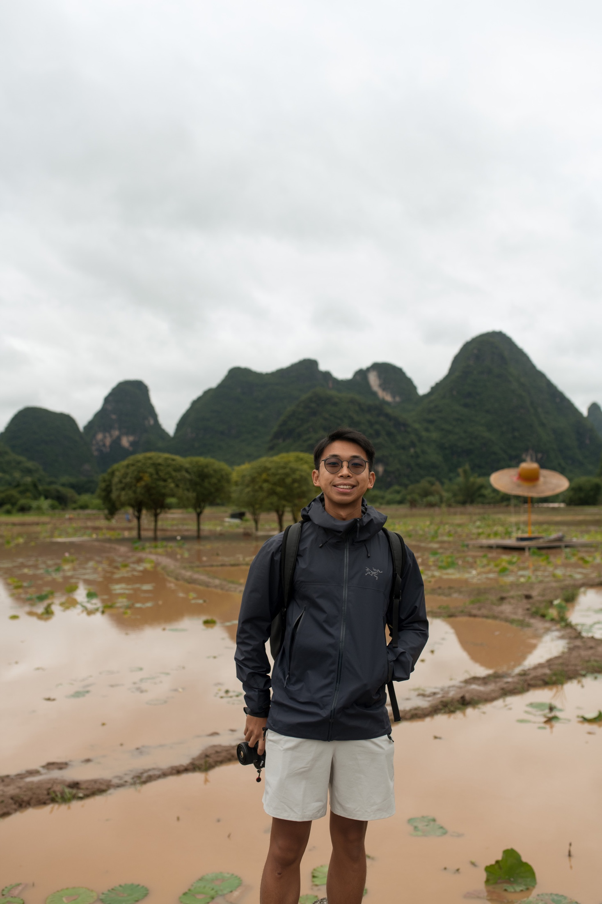

About micoshoots
Photography is my go-to.
A personal archive of the ordinary, the eventful, and everything in between.

A little more
Personal work, made slowly.
Photography as a medium has been my go-to — in both documenting the mundane, and capturing the eventful. I love every part of the process — conceptualizing, shooting, and editing — always scratching my creative itch, and allowing me to, simply put, create more.
With photography being my favourite form of self-expression, I am never without a camera. I’ve captured frenetic concerts, breathtaking landscapes, and candid portraits, with this portfolio being a testament to them. Feel free to go through my favourite captures, and if you’d want to see my more recent work, check out my Instagram.
When I’m not taking photos, I’m probably experimenting with videos. I had the chance to execute a video-series advertisement for L’Oréal Kérastase Paris’ Blond Absolu line — watch it here.
I’m always hungry to create, and if you share that same drive, don’t be shy — hit me up.
@micoshoots ↗